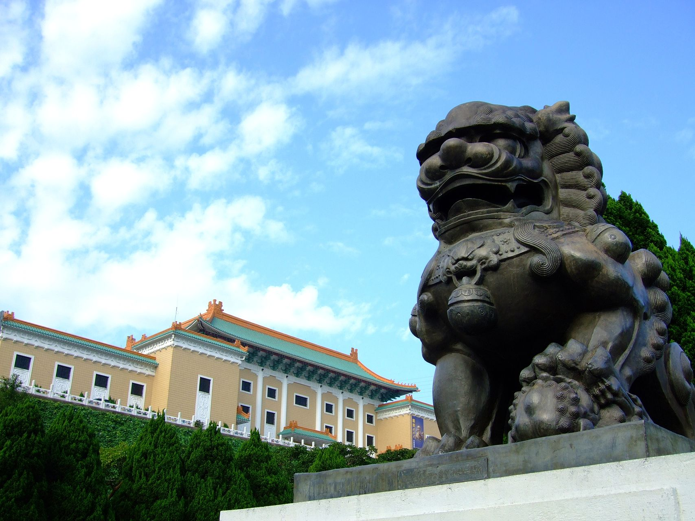
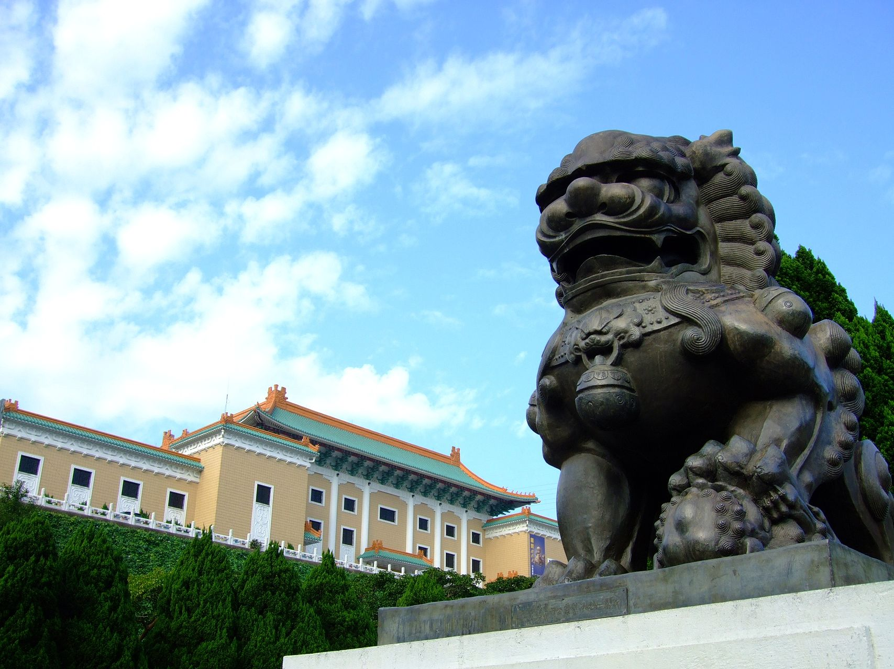

國立故宮博物院，簡稱 臺灣故宮或臺北故宮（博物院），別名中山博物院，為臺灣最具規模的博物館以及臺灣八景之一，也是古代中國藝術史與漢學研究機構。館舍位於臺北市士林區，一年可接待超過614萬人次的參訪旅客，曾位列2015年全球參觀人數第六多的藝術博物館。 國立故宮博物院是隸屬於中華民國行政院的中央二級機關，故宮院長為特任官，視同部會首長。它的前身是成立於京兆地方（今北京）紫禁城外廷的古物陳列所，1925年10月10日在紫禁城內廷另外組織了故宮博物院，後來因為抗日戰爭爆發輾轉遷移至南京市和四川省等地，古物陳列所於第二次世界大戰後裁撤併入國立中央博物院籌備處。隨後第二次國共內戰衝突導致時局再陷動盪，包括國立北平故宮博物院在內的6個機構於是在1948年11月10日決定遷往臺灣，幾經改組易名，最終由國立北平故宮博物院和國立中央博物院籌備處合併為國立故宮博物院，1965年11月12日在臺北現址復院開幕。此後，博物館致力打造成為文化創意產業加值應用的虛擬博物館，館舍也歷經多次整修擴建。
這是另一個段落
這是第三個段落
anchor_tag_relative_inking anchor_tag_absolite_linking 
